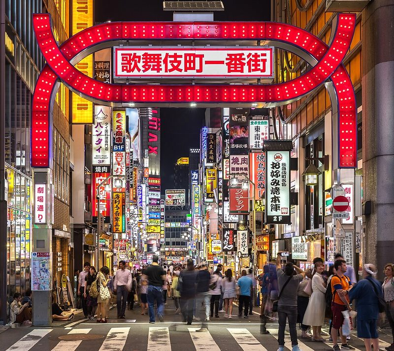
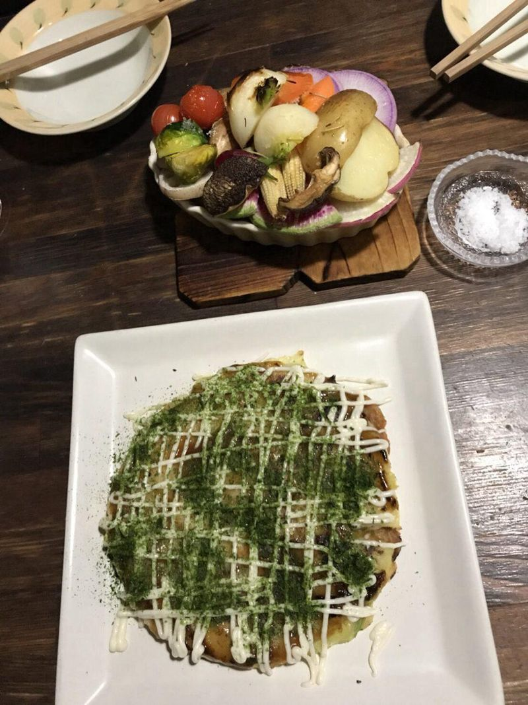
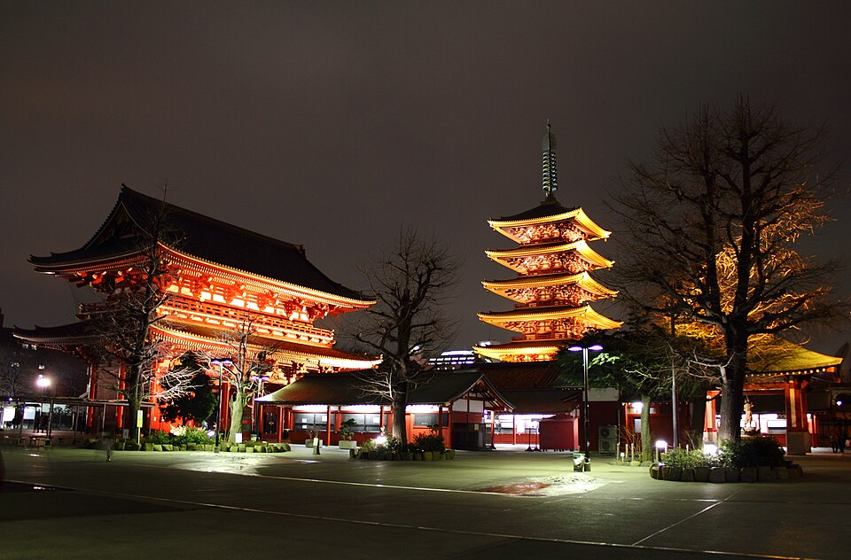
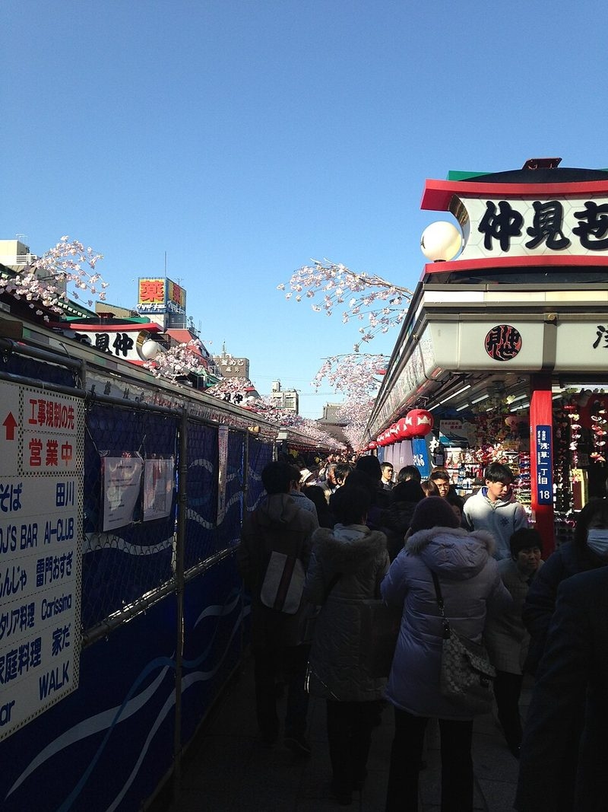
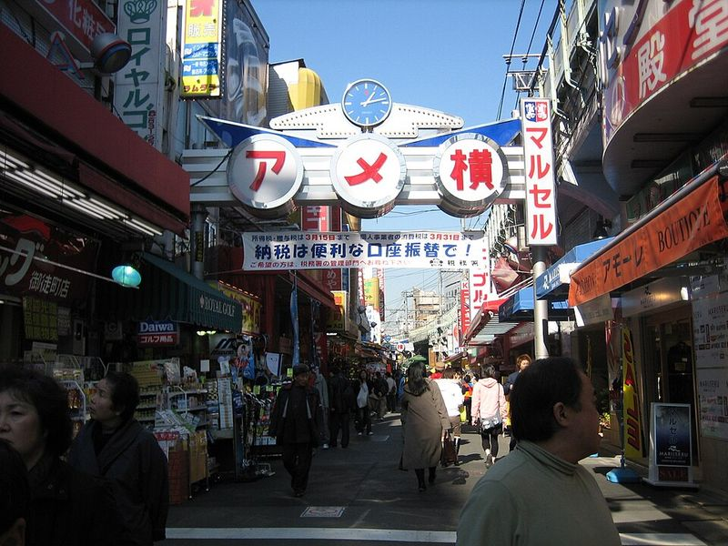
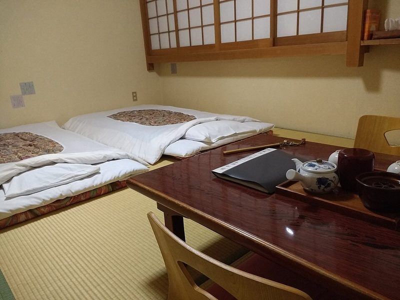
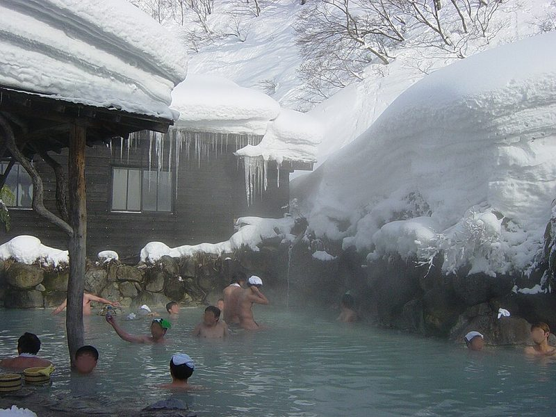
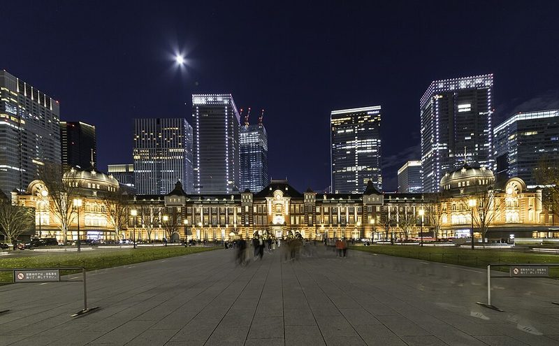

Tokyo, Mt. Fuji & Hakone (Wed Nov 25 – Wed Dec 2, 2026)
Jet-lag optimized for Chicago travelers: 1.5–2 hr unhurried mornings, productive daytime sightseeing, protected 2–4 PM recharge breaks, and sunset/evening dress-up & food-hopping.
2 Adults · Strictly No Pork & No Alcohol
1.5–2 Hr Morning Routine Built In Daily
Protected 2–4 PM Recharge (Beats Jet-Lag Crash)
Weekday Coasters & Gondolas · Weekend Markets
📊 8-Day Trip at a Glance
Items in chronological scheduled order for each day—tap any day to jump to its photos and schedule below.
| Day | Itinerary Items (In Scheduled Order) |
|---|---|
|
Wed Nov 25
Arrival
|
Shinjuku Skyscraper District → 7-Eleven / Lawson Late-Night Snack Run |
|
Thu Nov 26
West Tokyo
|
Mt. Takao Cable Car → Trail 1 Summit & Trail 4 Suspension Bridge Hike → Yakuo-in Mountain Temple → Shinjuku Omoide Yokocho Lantern Alleys & Kabukicho |
|
Fri Nov 27
Mt. Fuji
|
Lake Kawaguchiko → Mt. Fuji Panoramic Ropeway Gondola → Fuji-Q Highland Launch Coasters (Zokkon & Takabisha) → Shinjuku 'Hana-kin' (Flower Friday) Night Out |
|
Sat Nov 28
Harajuku & Shibuya
|
Meiji Jingu Forest Shrine → Takeshita Street & Omotesando → Matcha Tea Ceremony Class → SHIBUYA SKY Sunset Rooftop Deck → Shibuya Scramble Crossing → Ebisu Ramen & Gyoza |
|
Sun Nov 29
Asakusa, Akihabara & Ueno
|
Hands-On Sushi-Making Class → Akihabara Car-Free Sunday Boulevard → Golden-Hour Kimono Dress-Up → Senso-ji Temple Lanterns & Nakamise Street Stalls → Ueno Ameyoko Night Market → Live Sumo Show |
|
Mon Nov 30
Hakone Loop
|
Odakyu Romancecar Scenic Train → Hakone Ropeway Gondola Over Owakudani Volcanic Valley → Lake Ashi Sightseeing Pirate Ship → Old Tokaido 400-Year Cedar Trail → Traditional Wooden Ryokan & Private Open-Air Hot Spring |
|
Tue Dec 1
Bullet Train, Samurai & Night Karts
|
Tokaido Shinkansen Bullet Train → Tokyo Station Ramen Street & Gransta Food Hall → Samurai & Ninja Museum → Costumed Night Street Go-Karting (Shibuya) → Charcoal-Grilled Unagi (Eel) Dinner & Holiday Illuminations |
|
Wed Dec 2
Departure
|
Shinjuku Gyoen Autumn Landscape Garden → Isetan Depachika Underground Food Hall |
🗓️ Day-by-Day Showcase & Schedule
Wed Nov 25
Arrival in Tokyo & First Night in Shinjuku
📍 Haneda Airport → Shinjuku
Touch down at Haneda Airport (Tokyo's closer city airport), take a direct bus straight into the neon skyscraper district of Shinjuku, grab hot late-night Japanese convenience-store snacks, and get a great night's sleep.

Shinjuku Skyscrapers

Shinjuku Neon Streets
Timed Schedule
-
17:45 Land at Haneda Airport (Tokyo's closer city airport) ☀️ DaytimeClear immigration, baggage claim, and customs using your Visit Japan Web QR codes (~60–90 min total) and withdraw yen cash at a 7-Eleven ATM in the arrival lobby.
-
19:30 Direct Airport Limousine Bus or Train to Shinjuku (Tokyo's Midtown-style skyscraper & hotel hub) ☕ Dedicated RestSit back for a 50–65 minute ride right to Shinjuku Station / major Shinjuku hotels and check into your room.
-
21:00 7-Eleven / Lawson / FamilyMart Late-Night Snack Run (Japanese convenience stores) 🏮 Sunset & NightGrab fresh salmon or tuna onigiri (seaweed rice triangles), tamago sando (fluffy egg-salad sandwiches), hot oden broth, and matcha desserts (use Google Lens to avoid pork/ham), then turn in early.
Thu Nov 26
Mt. Takao Autumn Mountain Hike, Afternoon Nap & Omoide Yokocho Lantern Alleys
📍 West Corridor: Shinjuku ↔ Mt. Takao
On Day 2 your eyes will naturally pop open around 05:30–06:00 AM (after ~6 hours of sleep, since your Chicago clock thinks it's daytime). Don't force yourself to stay in bed—enjoy a relaxed 2-hour morning routine & hot breakfast, head out at 07:45 to catch the Mt. Takao Cable Car right after its 08:00 AM opening, hike Trail 1 & the Trail 4 suspension bridge with a 60-minute summit soba lunch, and return to your Shinjuku hotel by 13:00 for a long afternoon recharge across the 2:30 PM jet-lag crash before sunset skewers at Omoide Yokocho.

Mt. Takao Cable Car

Mt. Fuji from Mt. Takao

Mt. Takao Autumn Maples

Yakuo-in Mountain Temple

Mountain Buckwheat Soba

Omoide Yokocho Lantern Alley
Timed Schedule
-
05:30–07:45 🌅 Step 1 of Clock Reset: Natural 05:30–06:00 Wake-Up + 2-Hour Morning Routine & Breakfast ☀️ DaytimeNo need to stare at the ceiling if you wake up at 05:30 AM! Take a relaxed 2 hours to shower, unpack, and step outside into bright morning daylight after 06:30 sunrise (leave sunglasses off for 20 min to start shifting your internal clock) for hot coffee and breakfast near Shinjuku Station.
-
07:45–08:35 Seated Keio Line Express from Shinjuku to Takaosanguchi (base of Mt. Takao, 50 min) ☀️ DaytimeDirect 50-minute seated train from Keio Shinjuku Station (¥430 with Suica) straight to the mountain base while almost all city shops are still closed.
-
08:45–10:45 Mt. Takao Cable Car Up + Trail 1 Summit & Trail 4 Suspension Bridge Loop (beginner-moderate forest hike) ☀️ DaytimeThe Cable Car opens at 08:00 AM—arriving at 08:45 means zero line and crispest morning views of snow-capped Mt. Fuji! Walk the lively Trail 1 ridge through red autumn maples to the 599m summit and loop back across the Trail 4 wooden suspension bridge (zero rock-climbing).
-
10:45–11:45 🍜 60-Min Dedicated Summit Sit-Down Break: Hot Buckwheat Soba & Charcoal-Grilled Miso Dango ☕ Dedicated RestSit down at a mountain teahouse right as they open (zero wait!) for hot tororo soba (buckwheat noodles with grated mountain yam in soy-bonito broth—confirm no pork) and charcoal-toasted sweet miso rice dumplings.
-
11:45–13:00 Yakuo-in Mountain Temple Walk, Cable Car Down & Seated Train Back to Shinjuku (back by 13:00) ☀️ DaytimeStroll through cliffside Yakuo-in Temple's carved tengu statues, ride the Cable Car down to save your legs for tomorrow, and take the seated Keio train back to Shinjuku—arriving at 13:00 well before the 14:30 afternoon energy dip.
-
13:15–16:00 🛌 2 Hr 45 Min Protected Hotel Recharge & Power Nap (Timed for the Day-2 '2:30 PM Wall') ☕ Dedicated RestDay 2 has the strongest mid-afternoon jet-lag dip (14:30 Tokyo = 11:30 PM Chicago bedtime). Because we started at 07:45, you are already back at your hotel by 13:00! Take a 30–45 min power nap (set an alarm so you don't sleep 3 hours) and grab an iced matcha/coffee before heading out at sunset.
-
16:15–19:00 Shinjuku Sunset & Lantern Food-Hopping: Omoide Yokocho ('Memory Lane' skewer alleys) & Kabukicho Neon 🏮 Sunset & NightWalk 5 minutes from your hotel right as sunset falls (16:29) into Omoide Yokocho's glowing narrow lantern alleys and under the neon Kabukicho arch for charcoal-grilled chicken yakitori, wagyu skewers, and grilled scallops (show your no-pork card), then take 0.5–1mg melatonin at 21:00 for a full night's sleep.
Fri Nov 27
Mt. Fuji Panoramic Ropeway, Lakeside Break & Fuji-Q Highland Launch Coasters
📍 Mt. Fuji Corridor: Lake Kawaguchiko & Fuji-Q Highland
Step 2 of your clock staircase: your natural wake-up shifts ~45 minutes later to 06:15–06:30 AM. Enjoy a relaxed 1 hr 45 min morning routine & breakfast, board the 08:15 highway coach to snow-capped Mt. Fuji for the Mt. Fuji Panoramic Ropeway, a 75-minute lakeside Hoto noodle lunch, and afternoon rides on Zokkon & Takabisha at Fuji-Q Highland—then nap on the 16:30 coach back to Shinjuku before 'Flower Friday' dining.

Mt. Fuji & Lake Kawaguchiko

Mt. Fuji Panoramic Ropeway

Lake View from the Gondola

Fuji-Q Highland & Mt. Fuji

Fuji-Q Launch Coaster

Fuji-Q Roller Coasters
Timed Schedule
-
06:15–08:00 🌅 Step 2 of Clock Reset: Natural 06:15–06:30 Wake-Up (+45 Min Later) + 1 Hr 45 Min Routine & Breakfast ☀️ DaytimeYour body clock shifts ~45 minutes later than Thursday. Take a full 1 hr 45 min to shower, get dressed, step into morning daylight without sunglasses, and enjoy a hot breakfast & coffee before walking to Busta Shinjuku.
-
08:15–10:00 Seated Highway Coach from Busta Shinjuku to Lake Kawaguchiko (scenic lake at the foot of Mt. Fuji) ☕ Dedicated RestDirect 1 hr 45 min reserved-seat highway bus from Shinjuku Expressway Bus Terminal (4F above Shinjuku South Exit).
-
10:15–11:45 Mt. Fuji Panoramic Ropeway (Anakeesta-style mountain gondola & summit viewing deck on Mt. Tenjo) ☀️ DaytimeRide the 3-minute panoramic gondola up to the 1,075m Mt. Tenjo observation deck and snack house staring straight across Lake Kawaguchiko at snow-capped Mt. Fuji.
-
11:45–13:00 🍜 75-Min Dedicated Lakeside Sit-Down Lunch Break & 3-Min Train Hop to Fuji-Q ☕ Dedicated RestSit down by Lake Kawaguchiko for a hot bowl of vegetarian/seafood Hoto (thick flat udon noodles simmered in miso pumpkin broth—ask for no pork), then hop 1 train stop (3 minutes on the Fujikyu Railway) to Fuji-Q Highland Station.
-
13:00–16:15 Fuji-Q Highland Launch Coasters (Zokkon motorbike multi-launch coaster & Takabisha, with a 45-min cafe break at 14:15) ☀️ DaytimePark entry is free; use pre-booked Priority Tickets (fast-passes) to ride Zokkon (2023 Hagrid's-style motorcycle coaster with 4 high-speed launches) and Takabisha (100 km/h launch + 121° drop) or Fujiyama—with a dedicated 14:15–15:00 sit-down cafe & warm crepe break right during the 2:30 PM afternoon dip.
-
16:30–18:15 🚌 1 Hr 45 Min Seated Highway Coach Nap Back to Shinjuku ☕ Dedicated RestBoard the direct highway coach right outside the Fuji-Q Highland gate and nap in your reclined seat all the way back to Shinjuku.
-
18:45 'Hana-kin' (Flower Friday) Dinner & Food-Hopping near Shinjuku Station 🏮 Sunset & NightDrop your jacket at your hotel, freshen up, and step out into Tokyo's liveliest Friday-night dining streets for sizzling wagyu teppanyaki, crispy chicken karaage, or sushi right around Shinjuku South/West Exit.
Sat Nov 28
Harajuku, Matcha Tea, Afternoon Recharge, Sunset SHIBUYA SKY & Ebisu Ramen
📍 Harajuku → Omotesando → Shibuya → Ebisu (1.5-Mile Corridor)
Step 3 of your clock staircase: wake naturally around 07:15–07:30 AM for a relaxed 1 hr 45 min morning routine, walk under Meiji Jingu's giant cypress torii gates, stroll Takeshita Street & Omotesando, and whisk ceremonial matcha tea—then take a 90-minute afternoon recharge break (13:45–15:15) during the mid-afternoon dip before watching sunset and Tokyo's city lights turn on from the 47-story SHIBUYA SKY rooftop, walking Shibuya Scramble Crossing after dark, and warming up with chicken ramen & gyoza in Ebisu.

Meiji Jingu Forest Torii

Takeshita Street Harajuku

Omotesando Boulevard

Matcha Tea Ceremony

SHIBUYA SKY Rooftop

Shibuya Scramble Crossing
Timed Schedule
-
07:15–09:15 🌅 Step 3 of Clock Reset: Natural 07:15–07:30 Wake-Up (+60 Min Later) + 1 Hr 45 Min Breakfast & Routine ☀️ DaytimeWake naturally around 07:15–07:30, take a full 1 hr 45 min to get ready and enjoy breakfast/coffee, then hop 4 minutes on the JR Yamanote Line from Shinjuku to Harajuku.
-
09:30–10:45 Meiji Jingu Forest Shrine (Shrine #1 of 2 — towering wooden torii gates inside a 170-acre forest) ☀️ DaytimeWalk flat gravel paths beneath 100-year-old evergreens and giant cypress gates to the main courtyard before midday Saturday crowds build (Saturday mornings are also prime time to spot a traditional Shinto wedding procession!).
-
10:45–12:15 🥞 90-Min Dedicated Brunch & Cafe Break: Takeshita Street Crepes & Omotesando Boulevard ☕ Dedicated RestStroll down colorful Takeshita Street right as the shops open (beating the shoulder-to-shoulder afternoon crowd) for fresh hot strawberry/custard crepes, then sit down for an early lunch along tree-lined Omotesando Avenue.
-
12:30–13:30 Traditional Matcha Green-Tea Ceremony Class (seated cultural workshop + natural caffeine boost) ☀️ DaytimeA calm, seated 60-minute session learning to whisk ceremonial-grade matcha green tea paired with seasonal wagashi (sweet bean confections)—giving you a smooth natural L-theanine + caffeine boost for the afternoon.
-
13:45–15:15 🛌 90-Min Protected Afternoon Recharge Break (Hotel Power Nap or Cozy Shibuya Lounge) ☕ Dedicated RestWith Night Street Go-Karting moved to Tuesday (when your jet lag is 100% gone), Saturday afternoon has zero rush! Hop 7 minutes back to your Shinjuku hotel for a 30-min power nap across the 2:30 PM dip, or relax in a Shibuya cafe before your sunset rooftop slot.
-
15:30–17:00 SHIBUYA SKY Open-Air Rooftop Deck at True Sunset (47 stories above Shibuya — Tokyo's Empire State Building) 🏮 Sunset & NightTimed ticket skips the box-office line. Step out onto the open-air 360° rooftop helipad deck at golden hour (sunset 16:28) to watch Mt. Fuji silhouette against the sky and the entire Tokyo skyline light up below you.
-
17:15–19:30 Shibuya Scramble Crossing Neon Walk + Ramen & Gyoza Hop in Ebisu (1 stop south) 🏮 Sunset & NightWalk across iconic Shibuya Scramble Crossing (Tokyo's Times Square) under the giant neon video screens right after descending from SHIBUYA SKY, then hop 1 train stop (2 minutes) to relaxed Ebisu for creamy tori-paitan (chicken broth) or yuzu-shio ramen and crispy chicken/seafood gyoza.
Sun Nov 29
Relaxed Sushi Class, Car-Free Akihabara, Sunset Kimono at Senso-ji, Ueno Market & Sumo
📍 East Corridor: Asakusa → Akihabara → Ueno Ameyoko
Step 4 of your clock staircase: with Samurai Museum moved to Tuesday afternoon, Sunday starts at a super-relaxed 11:30 AM! Wake around 08:30, take your time getting ready, shape your own sushi for lunch in Asakusa, and walk down the middle of Akihabara's Sunday-only car-free boulevard—then take a 14:15 cafe break before dressing in silk kimono at golden hour as Senso-ji's giant red lanterns light up, grazing Ueno Ameyoko's night stalls, and finishing with a seated Live Sumo Dinner Show.

Sushi-Making Class

Akihabara Car-Free Sunday

Senso-ji Temple at Night

Nakamise Street Stalls

Ueno Ameyoko Night Market

Live Sumo Show
Timed Schedule
-
08:30–10:45 🌅 Step 4 of Clock Reset: Natural 08:30 Wake-Up + Unhurried Morning Routine & Coffee ☀️ DaytimeBy Sunday (Day 5) your internal clock has reached your normal ~08:30 AM weekend rhythm! Take over 2 hours to get ready and grab coffee/light pastry (keep breakfast light since your Sushi-Making Class is at 11:30!), then ride the Chuo/Ginza line to Asakusa.
-
11:30–13:00 Hands-On Sushi-Making Class in Asakusa (seated culinary workshop + your lunch) ☀️ DaytimeLearn to season sushi rice and shape your own nigiri and sushi rolls with a local instructor right in historic Asakusa, then sit down and eat everything you made for lunch (skip the optional sake add-on).
-
13:15–14:15 Akihabara Sunday-Only 'Hokoten' Car-Free Boulevard (Tokyo's neon arcade & electronics avenue) ☀️ DaytimeEvery Sunday from 13:00 to 17:00 (weather permitting), Akihabara closes its main 6-lane boulevard (Chuo-dori) to all cars so pedestrians can walk right down the middle of the street past multi-story GiGO arcades and electronics towers.
-
14:15–15:00 ☕ 45-Min Dedicated Cafe Sit-Down & Matcha Break Back in Asakusa ☕ Dedicated RestHop 5 minutes back to Asakusa and sit down with a warm drink right during the mid-afternoon window before your golden-hour kimono stroll.
-
15:00–16:45 Golden-Hour Kimono Dress-Up + Senso-ji Sunset Lanterns (Temple #2 of 2) & Nakamise Street Snacks 🏮 Sunset & NightDress in traditional silk kimono in the cool late afternoon, stroll 250-meter Nakamise-dori for warm melonpan (crispy sweet bread), fresh senbei rice crackers, and matcha sweets, and watch Tokyo's oldest 645 AD Buddhist temple (Senso-ji), giant red Kaminarimon lantern, and 5-story pagoda light up at sunset (16:28).
-
17:00–18:10 Ueno Ameyoko Open-Air Night Market Food-Hopping (bustling stalls under the train tracks, 5 min away) 🏮 Sunset & NightHop 3 stops (5 min on the Ginza Line) to Ueno Ameyoko after dark when the open-air market alleys glow under the elevated train tracks. Graze on hot takoyaki (octopus balls), grilled seafood skewers, and candied fruit skewers (skip pork menchi-katsu).
-
18:30–20:15 Seated Live Sumo Show & Chicken Chanko Hot-Pot Dinner (evening show as Sunday streets quiet down) 🏮 Sunset & NightRight as Sunday evening foot traffic winds down, sit back for a 90-minute live sumo demonstration with former professional rikishi (sumo wrestlers)—including rules explanation, practice bouts, a chance to challenge a wrestler in the ring, and a hearty chicken chanko-nabe hot-pot dinner.
Mon Nov 30
Hakone Volcanic Gondola, Lake Ashi Cruise, Cedar Trail & 1-Night Wooden Ryokan
📍 Hakone National Park Loop (85 Min from Shinjuku)
Fully aligned with your normal 08:15–08:30 AM wake-up rhythm! Take a relaxed 1 hr 45 min morning routine, ride the 10:00 Romancecar into Hakone, soar 130m above Owakudani's steaming sulfur vents on the Hakone Ropeway, sail across Lake Ashi on a sightseeing ship, walk beneath 400-year-old giant cedars, and check into your traditional wooden Ryokan by 16:00 for a private open-air hot-spring soak.

Hakone Ropeway Gondola

Owakudani Volcanic Valley

Lake Ashi Sightseeing Ship

Old Tokaido Cedar Trail

Traditional Wooden Ryokan

Open-Air Hot Spring Bath
Timed Schedule
-
08:15–09:50 🌅 Clock Fully Aligned: Natural 08:15–08:30 Wake-Up + 1 Hr 35 Min Routine, Breakfast & Bag Drop ☀️ DaytimeWake on your normal 08:15–08:30 AM schedule, eat breakfast, and leave your large suitcases stored at your Shinjuku hotel bell desk—bringing only a light 1-night backpack to Hakone.
-
10:00–11:25 Odakyu Romancecar Panoramic Express from Shinjuku to Hakone-Yumoto (85 min seated train) ☀️ DaytimeRide the reserved-seat Odakyu Romancecar (85 minutes direct from Shinjuku) into the mountains of Hakone.
-
11:45–13:00 Hakone Ropeway Gondola Over Owakudani Volcanic Valley (with a 30-min summit snack & viewing break) ☀️ DaytimeRide the Swiss-built panoramic gondola 130 meters above the steaming sulfur vents of Owakudani crater valley with views of Mt. Fuji. Step out at Owakudani Summit Station for a 30-minute viewing break and taste the famous black volcanic hot-spring eggs (kuro-tamago).
-
13:00–13:35 Lake Ashi Sightseeing Pirate Ship Cruise (from Togendai to Moto-Hakone) ☀️ DaytimeRide the ropeway down to the lakeshore and board the tall-masted sightseeing ship for a peaceful 35-minute cruise across volcanic Lake Ashi past the red lakeside torii gate of Hakone Shrine.
-
13:35–14:30 ☕ 55-Min Dedicated Lakeside Bakery & Cafe Sit-Down Lunch Break at Moto-Hakone ☕ Dedicated RestProtected 55-minute sit-down lunch and warm drink break right on the Lake Ashi waterfront (such as Bakery & Table Hakone or a lakeside soba cafe) before starting the forest walk.
-
14:30–15:20 Old Tokaido Highway Cedar Avenue Trail (easy-moderate 45-min walk under 400-year-old giant cedars) ☀️ DaytimeWalk a preserved section of the ancient feudal highway between Edo (Tokyo) and Kyoto, shaded by over 400 towering 400-year-old Japanese cedar trees alongside Lake Ashi—flat-to-gentle terrain, zero climbing.
-
16:00 Onward Check into Traditional Wooden Ryokan (tatami straw floors, yukata robes, private open-air hot spring & kaiseki dinner) 🏮 Sunset & NightArrive right before sunset (16:28). Change into your yukata (cotton kimono), slide open the shoji paper screens, soak in a private open-air hot-spring bath (rotenburo) listening to the mountain stream, and enjoy a multi-course wagyu & seafood dinner (confirm no pork when booking) before sleeping on plush futons on tatami mats.
Tue Dec 1
33-Min Bullet Train, Tokyo Station Food Hall, Samurai Museum, Night Go-Karts & Ginza Lights
📍 East Afternoon (Tokyo Station / Ginza / Samurai) → West Night (Shibuya Karts)
By Day 7 your internal clock is 100% aligned with Tokyo—giving you full afternoon and late-evening energy! Enjoy a 2-hour Ryokan hot-spring soak & breakfast, ride the 175-mph Shinkansen Bullet Train for 33 minutes into Tokyo Station, feast at Tokyo Ramen Street & Gransta, try on samurai armor & throw ninja stars at the Samurai & Ninja Museum, take a 75-minute afternoon break to drop your backpack at your hotel, and drive costumed street go-karts through neon Shibuya at 17:00 (using your existing Tue Dec 1 booking!) before a celebratory charcoal-grilled Unagi (eel) dinner & holiday illuminations walk.

Shinkansen Bullet Train

Tokyo Station at Night

Samurai Armor Experience

Costumed Street Go-Karts

Charcoal-Grilled Unagi (Eel)

Marunouchi Holiday Lights
Timed Schedule
-
08:30–11:00 🌅 Natural 08:30–09:00 Wake-Up + 2-Hour Ryokan Breakfast, Morning Hot-Spring Soak & Hop to Odawara ☀️ DaytimeEnjoy a full 2 hours at your Ryokan for a morning soak in the hot spring, traditional Japanese breakfast, and getting ready, then take the 15-minute train/taxi down to Odawara Shinkansen Station.
-
11:30–12:03 Tokaido Shinkansen Bullet Train from Odawara to Tokyo Station (33 minutes at up to 175 mph) ☀️ DaytimeExperience Japan's world-famous N700S Shinkansen Bullet Train on a smooth, effortless 33-minute ride directly into the heart of Tokyo Station—getting the full bucket-list bullet-train experience without a 6-hour round trip to Osaka.
-
12:15–13:30 Tokyo Station Ramen Street & Gransta Food Hall (spotless, upscale indoor food-stall & chef concourse) ☀️ DaytimePop your small 1-night backpack in a Tokyo Station coin locker (¥500) and stroll counter-to-counter through Gransta and Tokyo Ramen Street—8 of Japan's most celebrated ramen shops plus gourmet wagyu bento counters, crispy fried seafood tempura, sushi bowls, and artisan desserts (choose chicken/shoyu/seafood or vegan ramen; avoid pork tonkotsu).
-
13:45–14:45 Samurai & Ninja Museum (hands-on samurai armor, katana & ninja star throwing) ☀️ DaytimeA 60-minute interactive English tour where you try on samurai helmets/armor, hold replica katanas, and compete at throwing real metal ninja stars (shuriken)—moved here from Sunday morning so Sunday starts later and Tuesday afternoon stays exciting!
-
15:00–16:15 ☕ 75-Min Dedicated Afternoon Break + Ride West to Shinjuku/Shibuya (Drop Backpack & Gear Up) ☕ Dedicated RestPick up your 1-night backpack, ride back to your Shinjuku hotel to drop it off and grab your warm windproof jacket, gloves, and 3 physical driving documents (1949 Geneva IDP + physical US license + physical passport), then head 7 minutes to Shibuya.
-
16:30–18:00 Booked: Costumed Night Street Go-Karting (16:30 check-in / 17:00–18:00 full night neon drive) 🏮 Sunset & NightMatches your existing Tue Dec 1 17:00 Viator booking (57331P11) at Street Kart Shibuya Annex (10-11 Maruyama-cho 2F)! Because it's Day 7, your jet lag is 100% gone so you are completely sharp for your 1-hour guided night drive through neon Shibuya Crossing, Omotesando's holiday tree lights, and Harajuku.
-
18:30–21:00 Celebratory Charcoal-Grilled Unagi (Freshwater Eel Over Rice) Finale Dinner & Holiday Illuminations Walk 🏮 Sunset & NightWith full Day-7 evening energy, celebrate your final night with charcoal-grilled unagi (freshwater eel glazed in sweet soy tare over steamed rice—confirm no alcohol/mirin issue if strict) and a night stroll under the winter holiday illuminations (either along Omotesando/Roppongi right by Shibuya, or down Ginza & Marunouchi Nakadori's 1.2M champagne-gold lights).
Wed Dec 2
Shinjuku Gyoen Autumn Garden, Isetan Depachika Food Hall & Afternoon Flight
📍 Shinjuku → Haneda Airport (16:50 Flight)
Wake around 07:30–07:45 for a relaxed 1.5-hour morning routine and packing, stroll under crimson autumn maples and pond bridges in Shinjuku Gyoen right beside your hotel at 09:15, take a coffee break, graze freshly fried tempura and wagyu snacks at Isetan's famous luxury basement food hall, and catch your direct 12:15 bus to Haneda for your 16:50 flight home.

Shinjuku Gyoen Pavilion

Shinjuku Gyoen Autumn Maples

Fresh Tempura Rice Bowl
Timed Schedule
-
07:30–09:05 🌅 Wake Up (~07:30–07:45) + 1.5-Hour Morning Routine, Breakfast & Bag Drop at Bell Desk ☀️ DaytimeTake an unhurried morning to pack, eat breakfast, and leave your bags with the hotel bell desk before walking 5–10 minutes to Shinjuku Gyoen.
-
09:15–10:15 Shinjuku Gyoen National Garden (58-hectare imperial landscape garden in late-autumn maple color) ☀️ DaytimeEnter right after 09:00 opening (¥500) for a flat, peaceful 60-minute walk across wooden pond bridges, Japanese tea pavilions, and late-November red maples.
-
10:15–10:40 ☕ Dedicated Coffee & Pastry Sit-Down Break ☕ Dedicated RestSit down at a cafe right between Shinjuku Gyoen and Isetan before heading into the food hall.
-
10:40–11:50 Isetan Shinjuku 'Depachika' (luxury underground food-stall hall for prepared foods, tempura & gifts) 🏮 Sunset & NightWalk stall-to-stall through Isetan's gleaming basement food hall sampling freshly fried shrimp/vegetable tempura, wagyu croquettes (confirm no pork), fruit daifuku mochi, and boxed matcha/yokan gifts to pack in your carry-on.
-
12:15 Airport Limousine Bus from Shinjuku to Haneda Terminal 3 (arriving ~13:30 for 16:50 flight) ☀️ DaytimePick up your bags at the hotel, board the direct Airport Limousine Bus (~60 min), and arrive at Haneda Terminal 3 with plenty of time for tax-free airport shopping before your 16:50 flight home.